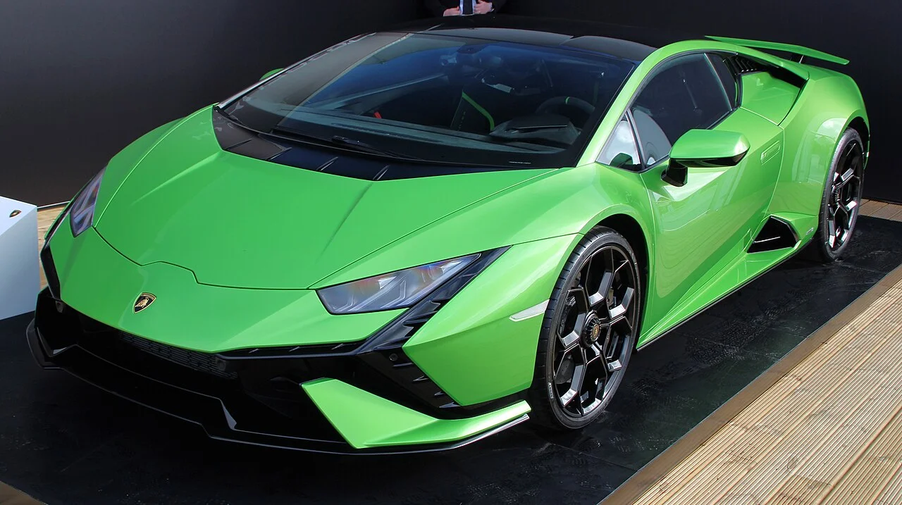
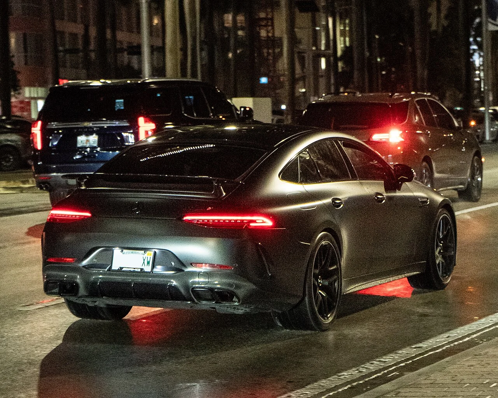

▲ 제로백 3.0초, 하이브리드 슈퍼카 맥라렌 아투라 ⓒ Calreyn88, Wikimedia Commons (CC BY-SA 4.0)
체감 가속도는 숫자로 설명하기 어렵지만, 제로백(0-100km/h) 3초대는 확실한 기준점이 됩니다. 웬만한 롤러코스터보다 빠르게 몸이 시트에 파묻히는 감각인데, 놀랍게도 이 정도 성능을 내는 차들이 이미 국내에서 정식 신차로 판매되고 있습니다. 억대를 훌쩍 넘는 가격표는 그림의 떡이더라도, 실제로 어떤 차들이 이 영역에 있는지 정리했습니다.
1. 맥라렌 아투라 — 2억 9,900만 원, 제로백 3.0초
맥라렌의 하이브리드 슈퍼카 아투라는 3.0리터 V6 트윈터보 엔진에 95마력 전기모터를 결합해 시스템 총출력 680마력을 냅니다. 정지 상태에서 시속 100km까지 3.0초, 최고속도는 330km/h에 달합니다. 7.4kWh 배터리로 순수 전기 모드 주행도 최대 31km까지 가능해, 슈퍼카임에도 도심에서는 조용히 움직일 수 있다는 점이 특징입니다. 국내 가격은 2억 9,900만 원부터 시작합니다.
2. 람보르기니 우라칸 테크니카 — 3억 4,000만 원, 제로백 3.2초

▲ 자연흡기 V10 엔진을 고집하는 람보르기니 우라칸 테크니카 ⓒ MrWalkr, Wikimedia Commons (CC BY-SA 4.0)
우라칸 테크니카는 최상위 트랙 사양인 우라칸 STO와 동일한 5.2리터 V10 자연흡기 엔진을 얹어 최고출력 640마력, 최대토크 57.6kg·m을 발휘합니다. 제로백은 3.2초로, 터보 엔진 특유의 인위적인 힘보다는 고회전에서 폭발적으로 치솟는 자연흡기 특유의 사운드와 반응성을 그대로 느낄 수 있는 것이 강점입니다. 국내 판매 가격은 3억 4,000만 원부터입니다.
3. AMG GT 63 S 4매틱+ — 2억 4,540만 원, 제로백 3.2초

▲ 4도어이면서도 제로백 3.2초를 내는 메르세데스-AMG GT 63 S 4매틱+ ⓒ OWS Photography, Wikimedia Commons (CC BY 4.0)
앞서 소개한 두 모델이 2인승 미드십 슈퍼카라면, AMG GT 63 S 4매틱+는 뒷좌석까지 갖춘 4도어 그란투리스모입니다. 4.0리터 V8 바이터보 엔진으로 최고출력 639마력을 내며, 네바퀴굴림 시스템 덕분에 4도어 차체로도 제로백 3.2초를 기록합니다. 스포츠카 특유의 짜릿함과 일상적인 4인 탑승을 동시에 원하는 소비자에게 적합한 선택지로, 국내 가격은 2억 4,540만 원입니다.
4. 포르쉐 911 카레라 4 GTS — 2억 2,980만 원, 제로백 3.3초

▲ 이 리스트에서 가장 접근성이 좋은 포르쉐 911 카레라 GTS ⓒ Calreyn88, Wikimedia Commons (CC BY-SA 4.0)
911 카레라 4 GTS는 3.0리터 트윈터보 수평대향 6기통 엔진으로 최고출력 490마력을 내며, 8단 PDK 듀얼클러치와 사륜구동이 맞물려 제로백 3.3초를 기록합니다. 이 리스트에 오른 다섯 모델 중 가격이 가장 낮은 2억 2,980만 원부터 시작하지만, 911 특유의 완성도 높은 일상 주행성과 트랙 성능을 동시에 갖춰 '한 대로 다 되는 차'를 원하는 소비자에게 가장 현실적인 선택지로 꼽힙니다.
5. 벤틀리 컨티넨탈 GT S — 3억 6,850만 원, 제로백 3.5초

▲ 벤틀리 역대 가장 빠른 양산차, 더 뉴 컨티넨탈 GT S
벤틀리가 '역대 가장 사악한 벤틀리'라고 소개한 더 뉴 컨티넨탈 GT S는 4.0리터 V8 트윈터보에 전기모터를 결합해 시스템 최고출력 680마력, 최대토크 94.8kg·m을 발휘합니다. 육중한 그랜드 투어러 차체임에도 제로백 3.5초, 최고속도 306km/h를 기록하며, 순수 전기 모드로는 WLTP 기준 최대 80km까지 주행할 수 있습니다. 국내 가격은 3억 6,850만 원부터이며, 자세한 내용은 벤틀리 컨티넨탈 GT S·GTC S 국내 출시 기사에서 다뤘습니다.
다섯 모델 모두 국내에서 실제로 만나볼 수 있는 신차라는 공통점이 있지만, 성격은 제각각입니다. 매일 타는 일상 주행성을 원한다면 포르쉐 911, 순수한 자연흡기 사운드를 원한다면 람보르기니, 4인 탑승까지 고려한다면 AMG GT나 벤틀리 컨티넨탈이 더 현실적인 선택입니다. 억대 가격표는 여전히 부담스럽지만, 제로백 3초대의 세계가 생각보다 가까이 있다는 사실만큼은 분명합니다.